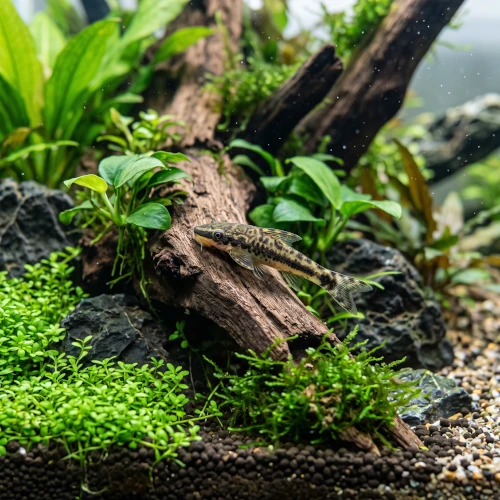

Nome popular principal
Limpa-Vidro
Limpa-Vidro, Otocinclus, Oto
Ficha de peixe
Cascudos e Limpa-Fundos
O incansável comedor de algas ideal para manter plantas e vidros limpos em aquários comunitários plantados.

Nome popular principal
Limpa-Vidro, Otocinclus, Oto
Nome científico
Nome técnico essencial para taxonomia, cruzamento de manejo e referência editorial consistente.
Dificuldade de manejo
Use este nível como referência inicial, sempre considerando volume, estabilidade e compatibilidade do aquário.
Seção 1
Seção 2
Seções 4 a 6
Limpa-Vidro tem hábito alimentar herbívoro. Média. 1 a 2 vezes ao dia. Alimenta-se prioritariamente de algas e biofilme, necessitando de suplementação com rações para herbívoros de fundo e vegetais aferventados.
Fêmeas adultas são ligeiramente maiores e possuem corpo mais largo e arredondado que os machos. Tipo de reprodução: Ovíparo. Dificuldade de reprodução: Avançado. A reprodução em cativeiro é incomum e ocorre de forma semelhante às coridoras, com postura de ovos adesivos em folhas e vidros.
Alta. Substrato recomendado: Areia fina de rio ou cascalho rolado sem arestas cortantes. Necessidade de esconderijos: Média. É perfeito para aquários bem plantados, pois não danifica as folhas e usa a vegetação como refúgio e fonte constante de alimento.
Seção 7
Raramente ultrapassa 5 cm de comprimento e exige aquários maturados para garantir suprimento natural de biofilme.
Seção 8
Ele é excelente para algas marrons e verdes suaves, mas não costuma consumir algas peteca ou filamentosas duras.
Recomenda-se manter um grupo mínimo de 5 a 6 indivíduos, pois são peixes sociais que se estressam quando mantidos sós.
Sim. Quando o aquário não possui algas suficientes, deve-se oferecer rodelas de abobrinha e rações para peixes herbívoros.